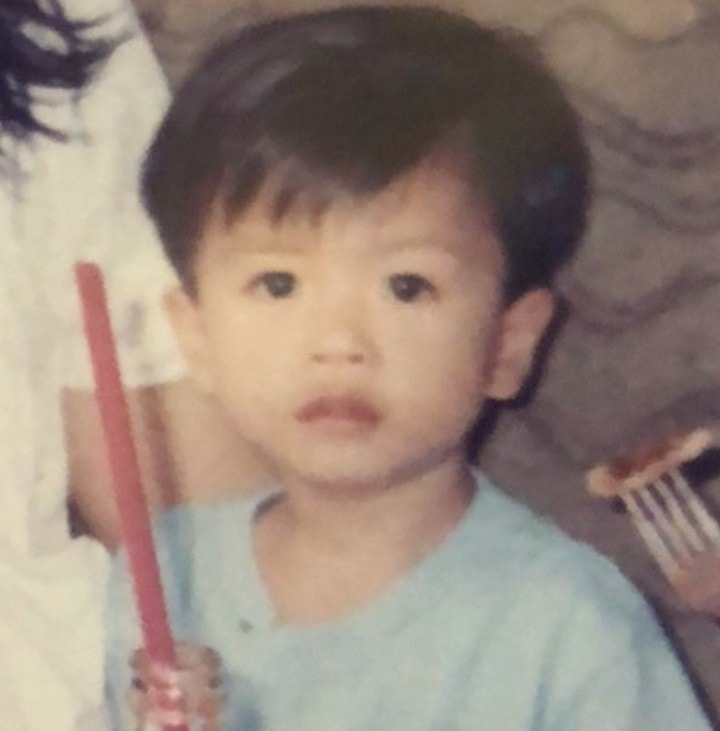
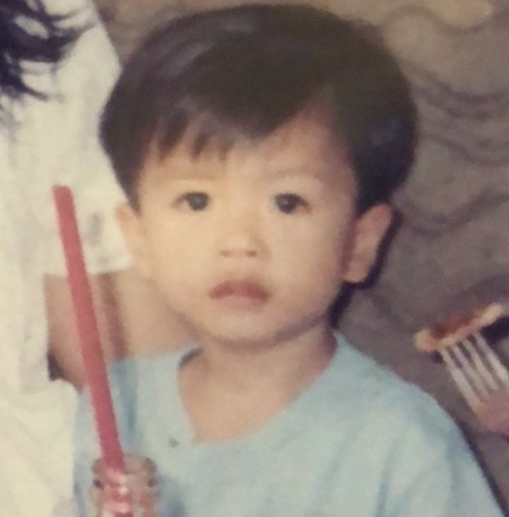
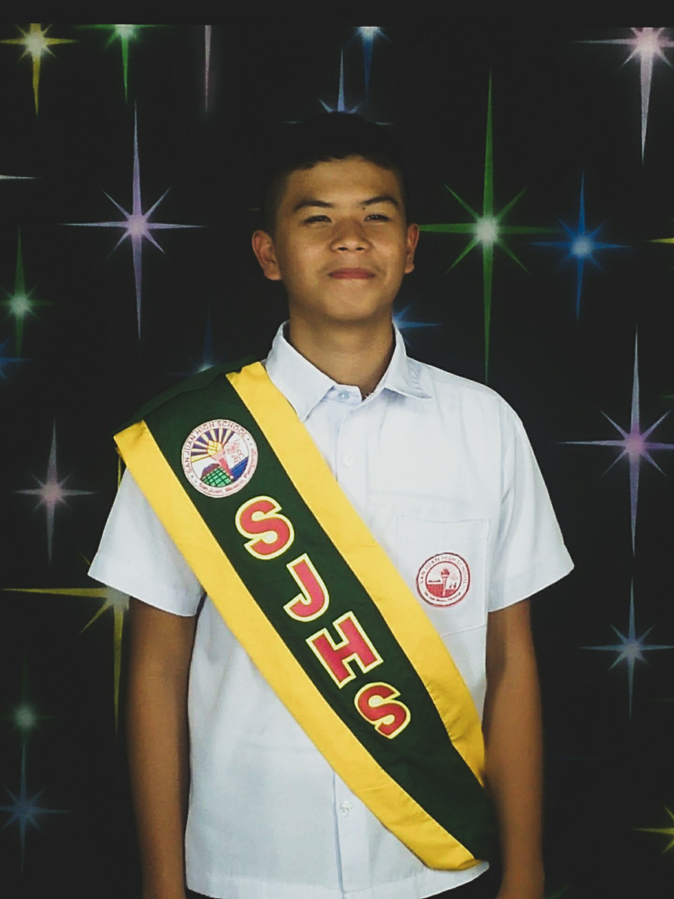
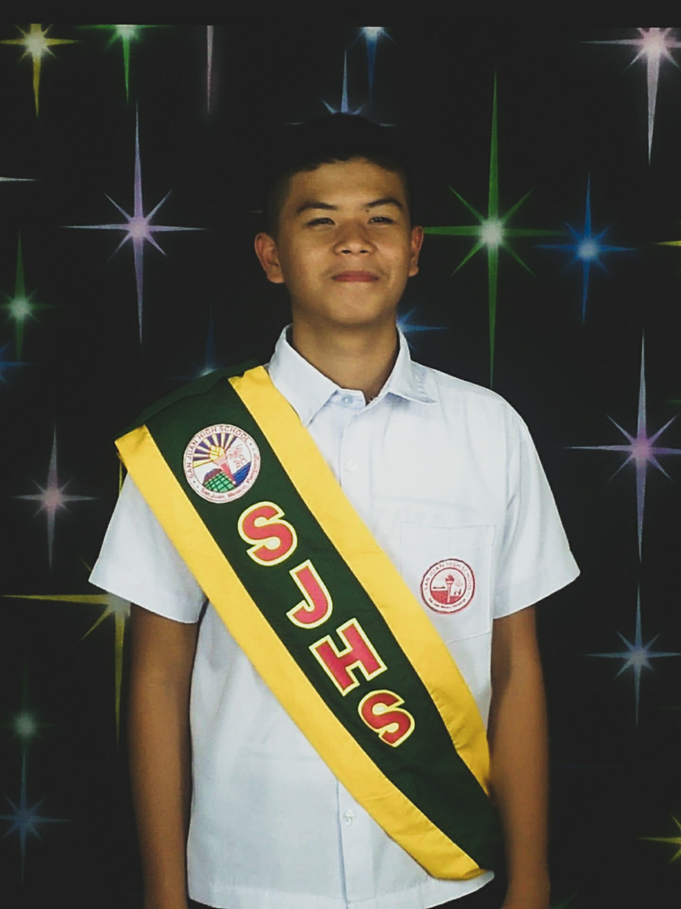
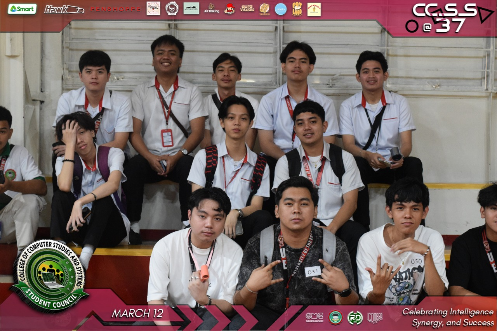
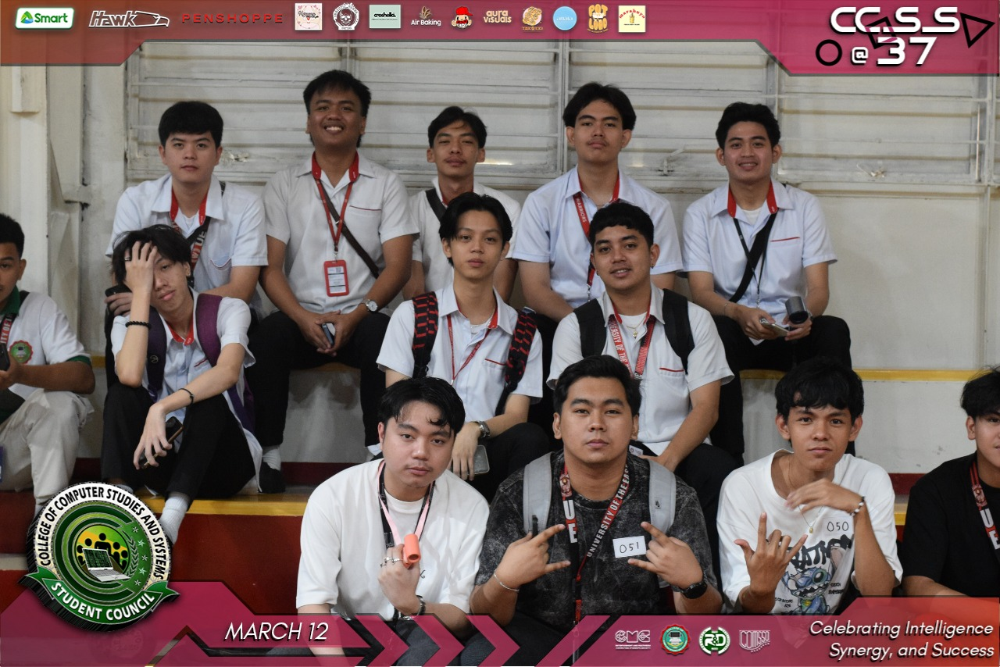

Childhood Years
Growing up in a small barangay in Arayat, Pampanga, my childhood was filled with simple joy, happy memories, and curiosity. As the second of four siblings, I spent much of my early years surrounded by love and care. My parents instilled in me the values of kindness, perseverance, and punctuality. They always emphasized the importance of learning and respect for elders. I spent my days outdoors, climbing trees, flying kites, and playing with friends. My curiosity led me to disassemble toys just to see how they worked. There was a time when I developed a passion for reading, trying to read anything I saw. My parents encouraged me to ask questions, which deepened my love for learning. School became an exciting place where I absorbed new knowledge eagerly. My teachers described me as attentive and thoughtful. Despite being shy, I found comfort in my close group of friends. Family gatherings were always filled with laughter, food, and stories. These experiences shaped me into a resilient and compassionate individual. I faced challenges, but my family's support helped me overcome them. Each moment contributed to my understanding of the world. Even as a child, I dreamed of making a difference in life. The lessons I learned laid the foundation for who I am today. I treasured every small experience that added to my personal growth. Childhood was fleeting, but the memories remain. These moments continue to guide me in my journey forward.
 


Teenage Years
Entering high school was like stepping into a new world. The expectations both academic and social felt overwhelming. Balancing studies, activities, and friendships became my daily routine. During this time, I discovered a passion for online games. This led to problems, including skipping school. My parents were eventually called to school to address my absences. Realizing my mistake, I decided to refocus on my studies. I participated in various school activities to distract myself. Sports, especially basketball, helped me rebuild my confidence. Teamwork and discipline became valuable lessons. My friends played a crucial role in keeping me on track. Despite academic pressure, I persevered with determination. There were moments of self-doubt, but my family’s support never wavered. I learned more about my strengths and weaknesses. These years shaped my aspirations for college. My experiences helped define the person I wanted to become. High school wasn’t just about studies; it was about self-discovery. I learned that challenges help us grow. The lessons I gained would prepare me for the future. Teenage years were truly a mix of trials and triumphs.
 


College Years
College was the most transformative phase of my life. I initially pursued Business Accountancy due to family pressure. Realizing it wasn’t for me, I switched to Information Technology. Programming had always fascinated me. The academic expectations in college were significantly higher. Managing time efficiently became essential. The coursework was demanding, but I enjoyed the challenge. I made lifelong friends with similar interests. College taught me independence and responsibility. It was more than an educational journey—it shaped my future. I learned to balance studies and personal time. College also helped me grow in confidence. Facing setbacks became a learning experience. I started envisioning my future career path. Professors and mentors guided me along the way. I realized the importance of perseverance. College years prepared me for real-world challenges. I found joy in applying my knowledge to projects. Each semester brought new experiences. College was the foundation for my lifelong learning journey.
 
